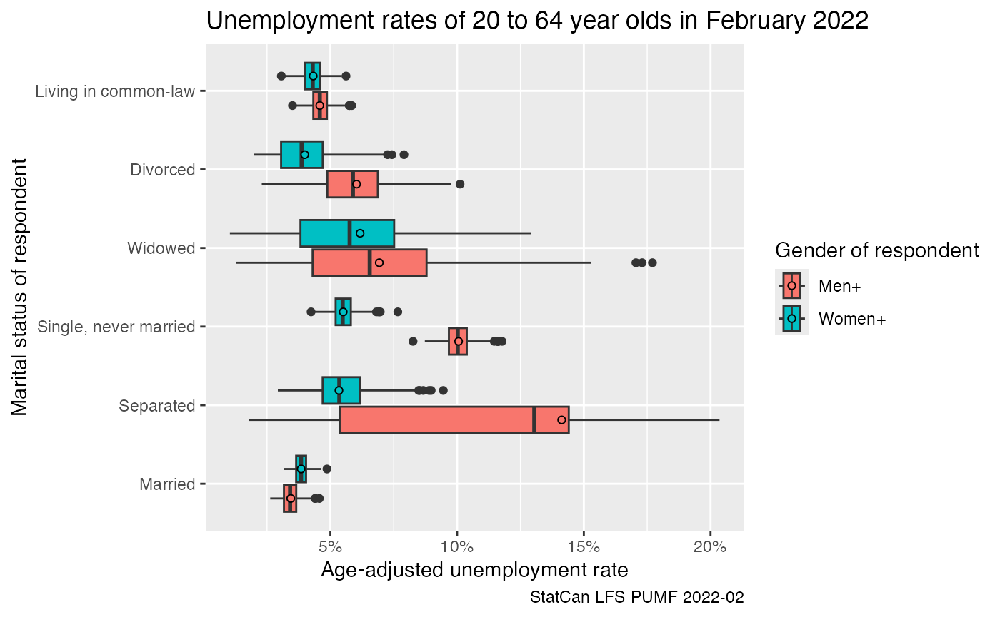
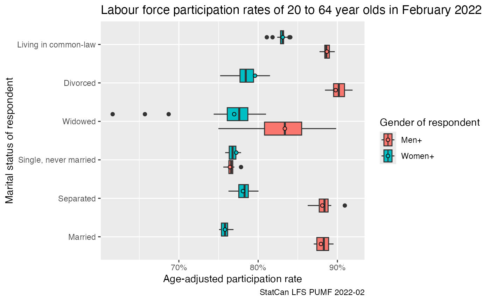
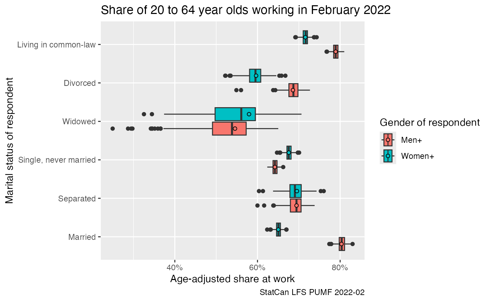
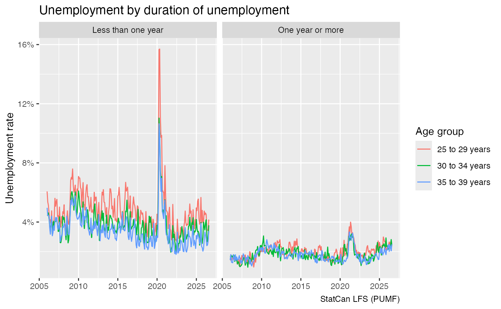
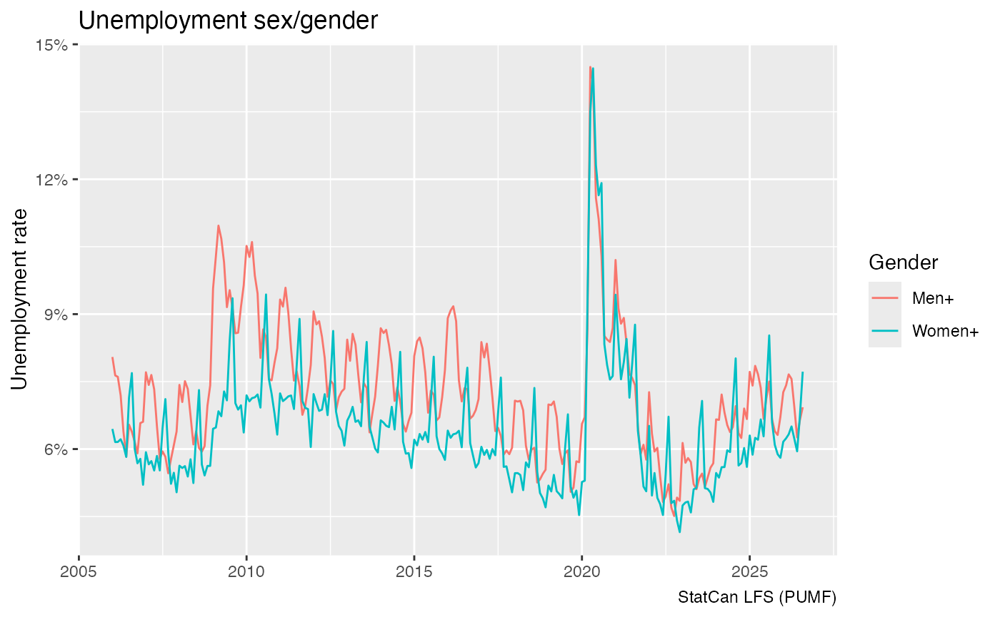
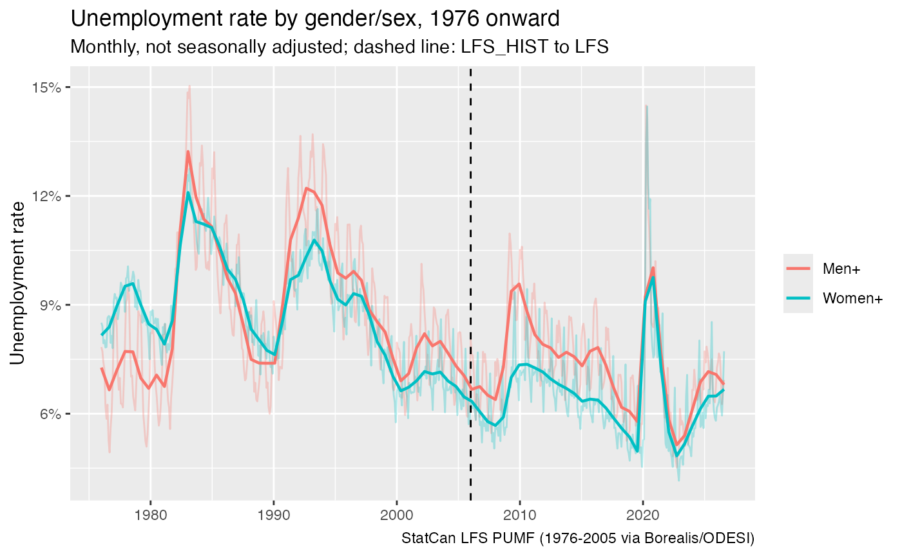
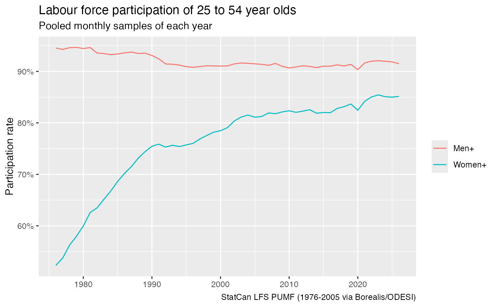
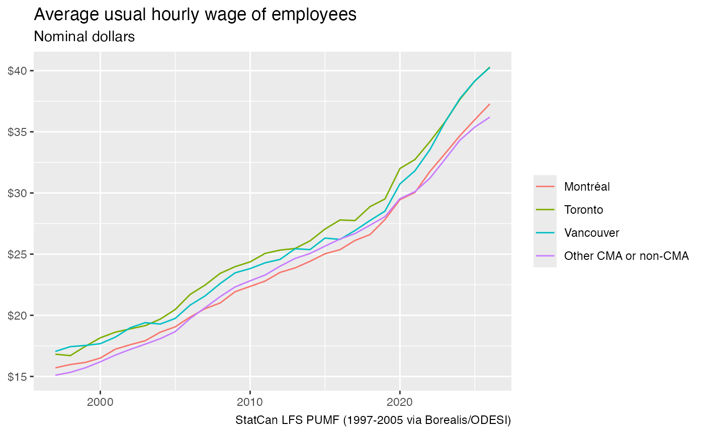

library(dplyr)
#>
#> Attaching package: 'dplyr'
#> The following objects are masked from 'package:stats':
#>
#> filter, lag
#> The following objects are masked from 'package:base':
#>
#> intersect, setdiff, setequal, union
library(tidyr)
library(ggplot2)
library(canpumf)
#> canpumf.cache_path is not set.
#> Downloaded data is stored in tempdir() and discarded when this R session ends, so it will be re-downloaded next time.
#> To persist data across sessions, set a cache directory:
#> options(canpumf.cache_path = "~/canpumf_cache")
#> Add that line to your .Rprofile to make it permanent.
options(canpumf.cache_path = Sys.getenv("COMPILE_VIG_CANPUMF"))The LFS is one of the most-used PUMF series, since January 2021 the LFS PUMF is now easily available for direct download instead of needing to request it via EFT. This makes it very easy to integrate the LFS into reproducible workflows.
The canpumf package has two functions to facilitate
access to the LFS PUMF. The first lists all LFS pumf versions that are
available for direct download.
list_canpumf_collection() |>
filter(Acronym=="LFS")
#> # A tibble: 93 × 5
#> Title Acronym Version `Survey Number` url
#> <chr> <chr> <chr> <chr> <chr>
#> 1 Labour Force Survey LFS 2026-08 3701 https://www150.statcan.g…
#> 2 Labour Force Survey LFS 2026-07 3701 https://www150.statcan.g…
#> 3 Labour Force Survey LFS 2026-06 3701 https://www150.statcan.g…
#> 4 Labour Force Survey LFS 2026-05 3701 https://www150.statcan.g…
#> 5 Labour Force Survey LFS 2026-04 3701 https://www150.statcan.g…
#> 6 Labour Force Survey LFS 2026-03 3701 https://www150.statcan.g…
#> 7 Labour Force Survey LFS 2026-02 3701 https://www150.statcan.g…
#> 8 Labour Force Survey LFS 2026-01 3701 https://www150.statcan.g…
#> 9 Labour Force Survey LFS 2025 3701 https://www150.statcan.g…
#> 10 Labour Force Survey LFS 2024 3701 https://www150.statcan.g…
#> # ℹ 83 more rowsThe second one fetches and loads the LFS data. For example, to download the LFS pumf for 2022 we use
lfs_2022 <- get_pumf("LFS","2022")
lfs_2022 |>
select(1:5) |>
head(10)
#> # A query: ?? x 5
#> # Database: DuckDB 1.5.4 [root@Darwin 27.0.0:R 4.6.0//Users/jens/data/pumf.data/LFS/LFS.duckdb]
#> REC_NUM SURVYEAR SURVMNTH LFSSTAT PROV
#> <int> <int> <int> <fct> <fct>
#> 1 1 2022 1 Not in labour force Quebec
#> 2 2 2022 1 Employed, at work British Columbia
#> 3 3 2022 1 Employed, at work British Columbia
#> 4 4 2022 1 Employed, at work Nova Scotia
#> 5 5 2022 1 Not in labour force British Columbia
#> 6 6 2022 1 Unemployed Manitoba
#> 7 7 2022 1 Not in labour force Manitoba
#> 8 8 2022 1 Employed, at work Alberta
#> 9 9 2022 1 Employed, absent from work Ontario
#> 10 10 2022 1 Employed, at work QuebecBy default the data is stored in the temporary session path,
generally we want to make sure that the canpumf.cache_path
option is set to a path to permanently cache the data.
Values come labelled, but columns are not. People working regularly
with the LFS data will likely want to keep the short default column
names, they can be converted to human readable column labels using
label_pumf_columns function.
lfs_2022 <- lfs_2022 |> label_pumf_columns()With this we can do some simple descriptive analysis. We could use
the add_bootstrap_weights function to add bootstrap weights
if desired. We focus in on February 2022 and add bootstrap weights. By
default this adds 500 weights, this will take time to generate for the
full LFS sample. For LFS data the bootstrap weight generation will
automatically stratify the generation by year and month. Here we
shortcut this by only generating bootstrap weights for the February 2022
data after calling collect, so they just get generated in memory for the
resulting tibble.
lfs_2022_02_data <- lfs_2022 |>
filter(`Survey month`==2) |>
collect() |>
add_bootstrap_weights(weight_col = "Standard final weight", seed = 42)
#> Replicate 50 / 500 ...
#> Replicate 100 / 500 ...
#> Replicate 150 / 500 ...
#> Replicate 200 / 500 ...
#> Replicate 250 / 500 ...
#> Replicate 300 / 500 ...
#> Replicate 350 / 500 ...
#> Replicate 400 / 500 ...
#> Replicate 450 / 500 ...
#> Replicate 500 / 500 ...For this vignette we look at gender-specific labour force status statistics for the 20 to 64 year old population, computing age-adjusted rates to even out age-specific effects.
data <- lfs_2022_02_data |>
filter(substr(`Five-year age group of respondent`,0,2) %in% seq(20,60,5)) |>
filter(`Labour force status`!="Not in labour force") |>
summarise(across(matches("Standard final weight|CPBSW\\d+"),sum),
.by=c(`Labour force status`,`Five-year age group of respondent`,`Gender of respondent`,
`Marital status of respondent`)) |>
pivot_longer(matches("Standard final weight|CPBSW\\d+"),names_to="Weight",values_to="Count") |>
group_by(`Five-year age group of respondent`,`Gender of respondent`,
`Marital status of respondent`, Weight) |>
mutate(Share=ifelse(Count==0,0,Count/sum(Count))) |>
ungroup()
data_age_adjusted <- data %>%
left_join((.) |>
summarize(Count=sum(Count),
.by=c(`Five-year age group of respondent`,`Gender of respondent`,Weight)) |>
mutate(P_age__gender=Count/sum(Count),
.by=c(`Gender of respondent`,Weight)) |>
select(`Gender of respondent`,`Five-year age group of respondent`,Weight,P_age__gender),
by=c("Gender of respondent","Five-year age group of respondent","Weight")) |>
summarise(age_adjusted=sum(Share*P_age__gender),
.by=c(`Gender of respondent`,`Labour force status`,`Marital status of respondent`, Weight))
data_age_adjusted |>
filter(`Labour force status`=="Unemployed") |>
ggplot(aes(x=age_adjusted, y=`Marital status of respondent`, fill=`Gender of respondent`)) +
geom_boxplot() +
geom_point(shape=21,data=~filter(.,Weight=="Standard final weight"),position=position_dodge(width=0.75)) +
scale_x_continuous(labels=scales::percent) +
labs(title="Unemployment rates of 20 to 64 year olds in February 2022",
x="Age-adjusted unemployment rate",
caption="StatCan LFS PUMF 2022-02")
We can similarly compute the age-adjusted participation rate by gender and marital status.
data2 <- lfs_2022_02_data |>
filter(substr(`Five-year age group of respondent`,0,2) %in% seq(20,60,5)) |>
summarise(across(matches("Standard final weight|CPBSW\\d+"),sum),
.by=c(`Labour force status`, `Five-year age group of respondent`,
`Gender of respondent`, `Marital status of respondent`)) |>
pivot_longer(matches("Standard final weight|CPBSW\\d+"),names_to="Weight",values_to="Count") |>
mutate(Share=ifelse(Count==0,0,Count/sum(Count)),
.by=c(`Five-year age group of respondent`,`Gender of respondent`,
`Marital status of respondent`, Weight))
data_age_adjusted2 <- data2 %>%
left_join((.) |>
summarize(Count=sum(Count),
.by=c(`Five-year age group of respondent`,`Gender of respondent`,Weight)) |>
mutate(P_age__sex=Count/sum(Count),
.by=c(`Gender of respondent`,Weight)) |>
select(`Gender of respondent`,`Five-year age group of respondent`,Weight,P_age__sex),
by=c("Gender of respondent","Five-year age group of respondent","Weight")) |>
summarise(age_adjusted=sum(Share*P_age__sex),
.by=c(`Gender of respondent`,`Labour force status`,`Marital status of respondent`, Weight))
data_age_adjusted2 |>
filter(`Labour force status`=="Not in labour force") |>
ggplot(aes(x=1-age_adjusted, y=`Marital status of respondent`, fill=`Gender of respondent`)) +
geom_boxplot() +
geom_point(shape=21,data=~filter(.,Weight=="Standard final weight"),position=position_dodge(width=0.75)) +
scale_x_continuous(labels=scales::percent) +
labs(title="Labour force participation rates of 20 to 64 year olds in February 2022",
x="Age-adjusted participation rate",
caption="StatCan LFS PUMF 2022-02")
Narrowing it down a bit to only look at the share of the population employed and at work in February 2022 drops these shares a bit.
data_age_adjusted2 |>
filter(`Labour force status`=="Employed, at work") |>
ggplot(aes(x=age_adjusted, y=`Marital status of respondent`, fill=`Gender of respondent`)) +
geom_boxplot() +
geom_point(shape=21,data=~filter(.,Weight=="Standard final weight"),position=position_dodge(width=0.75)) +
scale_x_continuous(labels=scales::percent) +
labs(title="Share of 20 to 64 year olds working in February 2022",
x="Age-adjusted share at work",
caption="StatCan LFS PUMF 2022-02")
It’s good practice to close the database connection after being done with a specific task.
lfs_2022 |> close_pumf()Derived connections, like the one to the February 2022 table, will automatically be closed too.
Timelines
LFS data can also easily be accessed across time.
lfs_pumf <- get_pumf("LFS", refresh="auto")We can now easily extract time series data, we want to perform as
many operations as possible at the database level. There are several
convenience functions when working with the LFS data, one is
add_lfs_SURVDATE which adds a SURVDATE column
based on the survey year and month.
unemployment_stats <- lfs_pumf |>
filter(LFSSTAT !="Not in labour force") |>
filter(AGE_12 %in% c("25 to 29 years","30 to 34 years", "35 to 39 years")) |>
mutate(jd=case_when(is.na(DURJLESS) ~ "Not applicable",
DURJLESS<12 ~ "Less than one year",
TRUE ~ "One year or more")) |>
add_lfs_SURVDATE() |>
summarize(Count=sum(FINALWT),.by=c(SURVDATE,jd,AGE_12)) |>
mutate(Share=Count/sum(Count),.by=c(SURVDATE,AGE_12)) |>
filter(jd!="Not applicable")
unemployment_stats |>
ggplot(aes(x=SURVDATE,y=Share,colour=AGE_12)) +
geom_line() +
facet_wrap(~jd) +
scale_y_continuous(labels=scales::percent_format()) +
labs(title="Unemployment by duration of unemployment",
y="Unemployment rate",x=NULL,
colour="Age group",
caption="StatCan LFS (PUMF)")
#> Warning: Missing values are always removed in SQL aggregation functions.
#> Use `na.rm = TRUE` to silence this warning
#> This warning is displayed once every 8 hours.
Before plotting we could call collect, but this does not
need to be done explicitly.
Because the data is efficiently organised in DuckDB, this query runs quite fast despite no explicit indexing of the database, taking less than half a second.
microbenchmark::microbenchmark(collect(unemployment_stats)) |>
boxplot()
#> Warning in microbenchmark::microbenchmark(collect(unemployment_stats)): less
#> accurate nanosecond times to avoid potential integer overflowsThe SEX variable has been recategorized into the GENDER concept
starting in 2011, older LFS PUMF data still uses SEX. We can harmonize
this by coalescing the values to create a new GENDER_SEX
column as done by the convenience function
add_lfs_GENDER_SEX.
lfs_pumf |>
filter(LFSSTAT !="Not in labour force") |>
add_lfs_SURVDATE() |>
add_lfs_GENDER_SEX() |>
summarise(Count=sum(FINALWT),.by=c(SURVDATE,LFSSTAT,GENDER_SEX)) |>
mutate(Share=Count/sum(Count),.by=c(SURVDATE,GENDER_SEX)) |>
filter(LFSSTAT=="Unemployed") |>
ggplot(aes(x=SURVDATE,y=Share,colour=GENDER_SEX)) +
geom_line() +
scale_y_continuous(labels=scales::percent_format()) +
labs(title="Unemployment sex/gender",
y="Unemployment rate",x=NULL,
colour="Gender",
caption="StatCan LFS (PUMF)")
lfs_pumf |> close_pumf()The long timeline, 1976 onward
Statistics Canada posts the LFS PUMF for 2006 onward. The monthly
files for January 1976 to December 2005 are only publicly available
through the Borealis Dataverse
(ODESI). They use the older, pre-2017 file layout. canpumf
loads them as a separate series, "LFS_HIST", which works
just like "LFS": every month you load is appended to one
shared database.
lfs_hist_1995_06 <- get_pumf("LFS_HIST", "1995-06") # one month
lfs_hist_1995_06 |>
count(LFSSTAT, wt = FWEIGHT) |>
collect()
#> # A tibble: 6 × 2
#> LFSSTAT n
#> <fct> <dbl>
#> 1 Employed, at work 12874136
#> 2 Employed, absent from work 731588
#> 3 Unemployed, temporary layoff 81243
#> 4 Unemployed, job searcher 1240976
#> 5 Unemployed, future start 42304
#> 6 Not in labour force 7677684A year ("1995") loads all twelve months, and
refresh = "auto" loads every month that is not yet in the
database. The first full load downloads all 360 monthly files and takes
a couple of hours. After that everything is read from the cache.
lfs_hist <- get_pumf("LFS_HIST", refresh = "auto")The two series cannot be stacked as they are. The column sets differ,
some variables are coded differently, and the current LFS stores hours
in tenths and wages in cents. get_lfs_timeline() does that
work. It combines whatever has been loaded of "LFS_HIST"
and "LFS" into one lazy table with a curated set of common
variables, and SOURCE records which series a row came from.
The two databases are opened read-only, and nothing is copied or
loaded.
By default the timeline uses only what has already been loaded. With
refresh = "auto" it first loads every available month of
either series that is not yet in the cache. An analysis script that
starts with get_lfs_timeline(refresh = "auto") therefore
always picks up the latest LFS release. When everything is current this
only checks the list of available versions.
lfs_tl <- get_lfs_timeline(refresh = "auto")
#> LFS timeline: LFS_HIST 1976-01..2005-12 (360 versions); LFS 2006..2026-08 (28 versions).
pumf_var_labels(lfs_tl)
#> # A tibble: 57 × 3
#> name label_en label_fr
#> <chr> <chr> <chr>
#> 1 SOURCE Source series Série source
#> 2 SURVYEAR Survey year Année d'enquête
#> 3 SURVMNTH Survey month Mois de l'enquête
#> 4 PROV Province Province
#> 5 AGE_12 Five-year age group of respondent L'âge du réponda…
#> 6 AGE_6 Age in 2 and 3 year groups, 15 to 29 L'âge des person…
#> 7 EDUC Highest educational attainment Plus haut niveau…
#> 8 MJH Single or multiple jobholder Personnes ayant …
#> 9 EVERWORK Identifies if a person has worked in the last year Indique si une p…
#> 10 FTPTLAST Full- or part-time status of last job Situation du der…
#> # ℹ 47 more rowsVariables with identical codes in both series use the current LFS labels. The rest are recoded to a common scheme:
-
LFSSTATcollapses the historical breakdown of unemployment. -
GENDER_SEXcombines sex and gender, in the same way asadd_lfs_GENDER_SEX(). -
MARSTAThas four categories, because the files before November 1999 have only four. -
CMAdistinguishes Montréal, Toronto, Vancouver and the rest, and isNAbefore 1987, when the older files do not identify CMAs. -
SCHOOLN,AGYOWNKand the industry groups (NAICS_18) are also recoded.
Hours are in hours and wages in dollars throughout, and the weight is
FINALWT. All the usual tools work on the result, including
add_lfs_SURVDATE() and
label_pumf_columns().
To get a long series of the unemployment rate, we again do the heavy lifting in the database and only collect the monthly totals.
lf_monthly <- lfs_tl |>
filter(LFSSTAT != "Not in labour force") |>
add_lfs_SURVDATE() |>
summarise(labour_force = sum(FINALWT),
unemployed = sum(FINALWT[LFSSTAT == "Unemployed"], na.rm = TRUE),
.by = c(SURVDATE, GENDER_SEX)) |>
mutate(rate = unemployed / labour_force) |>
collect()
lf_monthly |>
ggplot(aes(x = SURVDATE, y = rate, colour = GENDER_SEX)) +
geom_line(alpha = 0.3) +
geom_smooth(method = "loess", span = 0.05, se = FALSE, linewidth = 0.8) +
geom_vline(xintercept = as.Date("2006-01-01"), linetype = "dashed") +
scale_y_continuous(labels = scales::percent) +
labs(title = "Unemployment rate by gender/sex, 1976 onward",
subtitle = "Monthly, not seasonally adjusted; dashed line: LFS_HIST to LFS",
x = NULL, y = "Unemployment rate", colour = NULL,
caption = "StatCan LFS PUMF (1976-2005 via Borealis/ODESI)")
#> `geom_smooth()` using formula = 'y ~ x'
The recessions of the early 1980s and 1990s, 2008-09 and 2020 all show up clearly, and the series is continuous across the 2005/2006 seam.
Longer timelines bring out structural change. The participation rate of women in their core working years rose from about half to over 80%.
core_age <- c("25 to 29 years", "30 to 34 years", "35 to 39 years", "40 to 44 years",
"45 to 49 years", "50 to 54 years")
participation <- lfs_tl |>
filter(AGE_12 %in% core_age) |>
summarise(population = sum(FINALWT),
labour_force = sum(FINALWT[LFSSTAT != "Not in labour force"], na.rm = TRUE),
.by = c(SURVYEAR, GENDER_SEX)) |>
mutate(rate = labour_force / population) |>
collect()
participation |>
ggplot(aes(x = SURVYEAR, y = rate, colour = GENDER_SEX)) +
geom_line() +
scale_y_continuous(labels = scales::percent) +
labs(title = "Labour force participation of 25 to 54 year olds",
subtitle = "Pooled monthly samples of each year",
x = NULL, y = "Participation rate", colour = NULL,
caption = "StatCan LFS PUMF (1976-2005 via Borealis/ODESI)")
Variables that enter the survey later are NA for earlier
years, so a filter on them restricts the timeline automatically. The
three large CMAs are identified from 1987, and hourly wages are
collected from 1997 on.
lfs_tl |>
filter(LFSSTAT %in% c("Employed, at work", "Employed, absent from work"),
!is.na(HRLYEARN)) |>
summarise(wage = sum(HRLYEARN * FINALWT) / sum(FINALWT),
.by = c(SURVYEAR, CMA)) |>
collect() |>
ggplot(aes(x = SURVYEAR, y = wage, colour = CMA)) +
geom_line() +
scale_y_continuous(labels = scales::dollar) +
labs(title = "Average usual hourly wage of employees",
subtitle = "Nominal dollars",
x = NULL, y = NULL, colour = NULL,
caption = "StatCan LFS PUMF (1997-2005 via Borealis/ODESI)")
Some caveats apply when working across the full range:
- Population rebasing. The weights of each era reflect the population estimates in use when the files were last revised: 1976–86 original, 1987–95 rebased to the 2001 Census, 1996–2000 to 2006, 2001–05 to 2011, and the current LFS to more recent Censuses. The population series runs smoothly across these boundaries in the public-use files, but population counts from different eras are not strictly comparable. Rates are much less affected than counts.
-
1985–86. Estimates computed from
LFS_HISTmatch the published table 14-10-0287 to rounding, except for January 1985 to November 1986. For those months the public-use files give about 1.2% more unemployed than the published series. -
Variables outside the common schema. Occupation,
the spouse variables and other detail only available in one series are
not part of the timeline. Use
get_pumf("LFS_HIST")orget_pumf("LFS")for those.
As before, close the connections when done.
close_pumf(lfs_tl)
close_pumf(lfs_hist)
close_pumf(lfs_hist_1995_06)